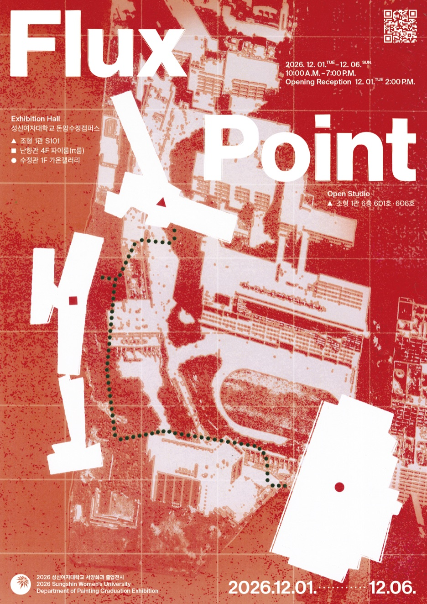
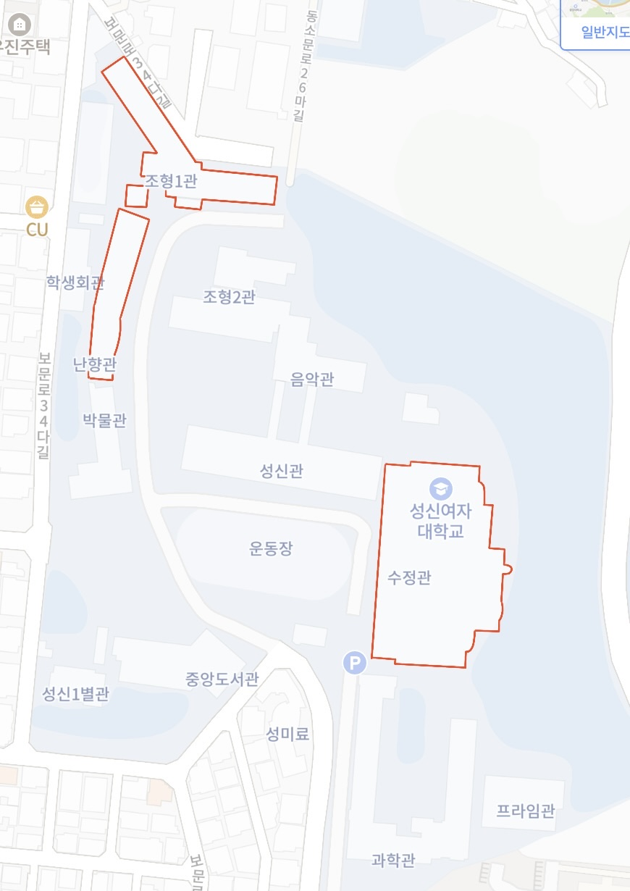
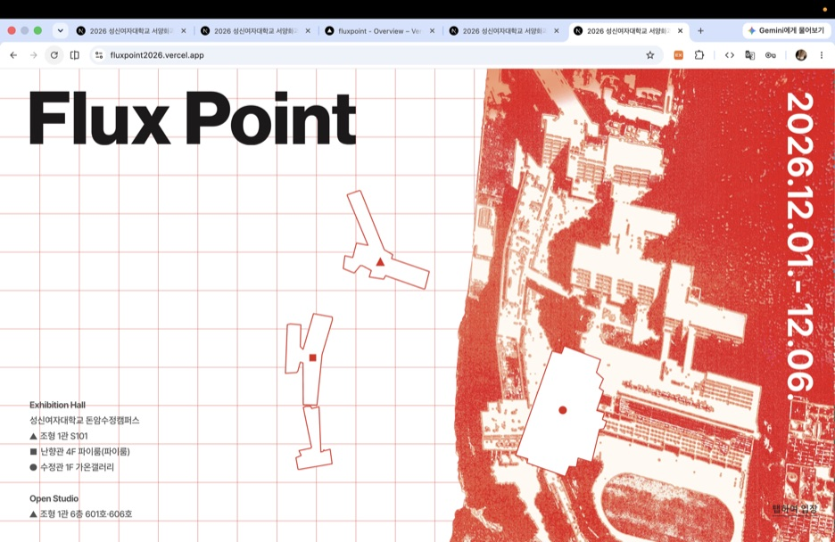

2026 Sungshin Women’s University
Department of Painting Graduation Exhibition

⟪Flux Point⟫
시공간의 무수한 흐름 속에서 마주한 개개인의 좌표들은 서로의 궤적을 공유하며 하나의 유동적 흐름, 플럭스(Flux)를 형성한다. 올해로 63년의 연혁을 맞이한 성신여자대학교 미술대학의 역사는 이 자리에서 수많은 주체들이 교차하며 남긴 흔적의 총합이다. 이번 전시는 대학이라는 제도적 울타리를 벗어나, 독립된 창작자로서 첫 발을 내딛는 32명 작가들의 전환점(Flux Point)을 기록한다.
유동하는 좌표의 형상은 자칫 불안정한 상태로 비칠 수 있다. 그러나 1960년대 예술의 고정된 형식을 해체하고 삶과 창작의 경계를 허물었던 전위 예술 운동 플럭서스(Fluxus)가 보여주었듯, 고정되지 않은 흐름이야말로 시스템을 전복하는 예술적 에너지의 근원이다.
이러한 플럭서스의 전복적인 에너지는 캠퍼스 내 경계를 허물고, 세 곳의 건물에서 동시다발적으로 전개된다. 이로써 이곳의 이미지들은 고정된 화이트 큐브의 완결성을 탈피하며, 끊임없이 요동치는 가변적 존재로서 작동한다.
세 개의 좌표로 분포된 작품들은 관람객이 물리적 공간을 이동하며 수행하는 시선의 교차와 발걸음, 그 틈새에서 발생하는 마찰을 통해 비로소 하나의 지도로 엮인다. 여기에 모인 작품들은 변화해 나갈 예술적 사유 한가운데 위치한 감각의 지표이자 예술적 탐구의 방향성을 지시하는 이정표이다. 「 Flux Point 」는 이 유동적인 흐름이 교차하고 충돌하며 만들어내는 상태 속의 기록이며, 동시에 기존의 경계를 넘어 각자의 새로운 궤적을 향해 나아가는 출발점이 된다.
전시 기간
2026.12.01. TUE - 2026. 12.06. SUN
AM 10:00 - PM 7:00
Opening 12.01. TUE PM 2:00 가온갤러리 앞
전시 장소
성신여자대학교 돈암수정캠퍼스
서울특별시 성북구 보문로 34다길 2
● 수정관 1F 가온갤러리
■︎ 난향관 4F 파이룸
▲ 조형1관 1F S101 / 6F 601호, 606호
*교내 안전상의 이유로 전시장 제외 모든 건물의 1층 외에는 외부인의 출입이 어려우니, 관람 시 이 점 유의 부탁드립니다.

오시는 길
버스
성신여대 입구 - 101, 102, 103, 104, 106, 107, 140, 142, 143, 149, 150, 152, 160, 161, 162, 171, 172, 1162, 1212
성북구청 입구 - 103, 142, 152, 272, 1014, 1111
지하철
4호선 성신여대입구역 1,2번 출구 또는
6호선 보문역 4번 출구에서 하차 후 도보로 약 10분 이동

▲︎ 2026 성신여자대학교 서양화과 졸업 전시 입장하기- 주최
- 성신여자대학교 미술대학 서양화과
- 참여작가
- 곽신영, 구아림, 권민진, 김가영, 김서영, 김서정, 김세원, 김유진, 김은수, 김채은, 나윤서, 박세린, 박예지, 오정현, 오주한, 윤정현, 이서진, 이지윤, 이채원(20222034), 이채원(20232014), 임가은, 임세연, 장연수, 전윤하, 정민재, 정세진, 차수연, 최유진, 최하영, 하설빈, 한수연, 한채연
- 교수진
- 박영근, 조병왕, 임상빈, 김정연
- 졸업전시준비 총감독
- 조병왕
- 졸업전시준비위원장
- 임가은
- 기획
- 차수연, 정세진
- 편집
- 구아림, 최하영
- 재무
- 박예지
- 홍보
- 구아림, 박예지
- 디자인
- 김규빈 디자이너, 정세진, 최하영, 구아림
- 초대장 기획
- 정세진
- 웹사이트 기획, 디자인, 개발
- 장연수
- 촬영 및 인쇄
- 제이앤 컴퍼니
- 협찬
- ㅇㅇㅇ